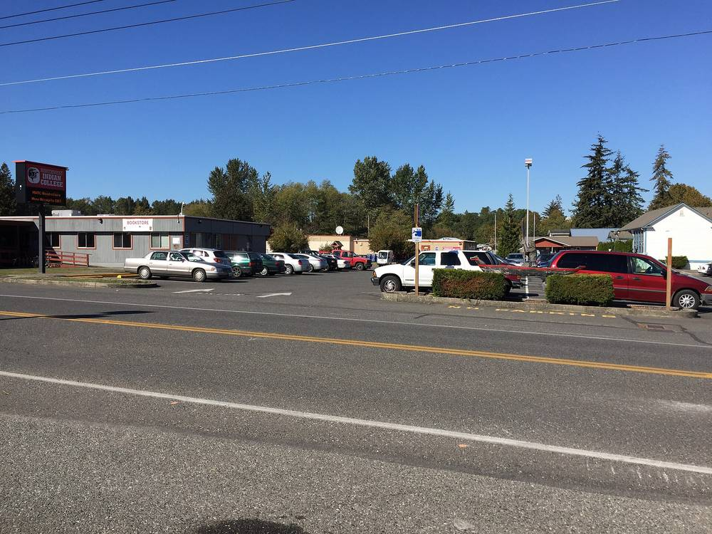

워싱턴주 원주민 부족 태양광 17건에 2,074만 달러

미국 워싱턴주가 탄소 배출권 거래 수입으로 부족 주택·학교·소방서의 태양광과 배터리를 돕는다. 2025년 예산이 모자라 떨어진 16건을 모두 채웠다.
미국 워싱턴주 상무부가 11월 20일(현지 시각) 원주민 부족 청정에너지 사업 17건에 2,074만2,913달러를 지원한다고 발표했다. 돈은 주의회가 2026년 보충예산으로 승인했고, 재원은 배출 총량을 정해 허용량을 파는 주 제도 「기후약속법」의 수입이다. 지원 대상은 워싱턴주 일부를 전통 영토로 둔 연방 인정 부족이며, 어떤 설비를 둘지는 부족이 스스로 정한다.
17건 가운데 7건이 부족 주택과 복지시설에 태양광을 다는 사업이다. 콜빌 연합부족은 48만7,594달러로 저소득 27가구가 사는 주택단지에 태양광과 배터리를 설치한다. 네즈퍼스 부족은 95만4,288달러로 부족 주택 여러 곳에 태양광 240kW와 배터리 560kWh를 나눠 달아 전기요금을 낮춘다. 스위노미시 부족 공동체는 3건을 받았고, 가장 큰 237만133달러는 주택 30채에 태양광 228kW와 배터리 228kW를 다는 데 쓴다.
정전 때도 공공 서비스를 이어 가기 위한 설비도 들어갔다. 노스웨스트 인디언 칼리지는 246만9,342달러로 태양광 124kW와 배터리 1,876kWh를 갖춘 캠퍼스 소규모 전력망을 짓는다. 스위노미시 소방서에는 110만3,959달러를 들여 태양광 15kW와 배터리 72kW를 단다. 머클슈트 주택청은 37만8,994달러로 새로 지을 주차장 지붕에 태양광 93.8kW를 올린다.
계획 단계 사업도 있다. 툴랄립 부족은 옛 매립지에 짓기로 한 5MW 태양광 단지의 설계·인허가 비용 20만 달러를 받았다. 이번 돈은 2025년 공모에서 신청액이 예산을 2,000만 달러 넘게 웃돌아 떨어진 16건과 일부만 받은 1건을 채우는 데 쓰인다.
시민에너지 관점
워싱턴주는 탄소 배출권을 팔아 거둔 돈 2,074만 달러를 부족 공동체의 주택 태양광과 소규모 전력망에 돌렸다. 예산이 모자라 떨어진 16건을 이듬해 보충예산으로 모두 살렸다는 점이 핵심이다. 우리도 배출권 유상할당 수입이 들어가는 기후대응기금을 햇빛소득마을과 에너지 취약 가구 태양광에 먼저 쓰면 주민 소유 발전소가 요금과 정전 걱정을 함께 덜 수 있다. 정부와 국회는 공모에서 떨어진 마을을 다음 해 예산으로 다시 챙기는 장치부터 만들자.
출처: Washington State Department of Commerce 2026-11-20 보도자료 「Commerce awards more than $20.7 million to advance tribal clean energy projects」 원문 보기
출처: Washington State Department of Commerce(EIN Presswire 배포) 2026-11-22 같은 보도자료 배포본(지원 17건 목록 전문) 원문 보기